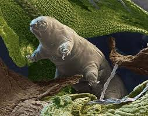

Môi trường sống của sinh vật là phần không gian bao quanh sinh vật mà ở đó các các yếu tố cấu tạo nên môi trường tác động trực tiếp hoặc gián tiếp đến sự sinh trưởng, phát triển của chúng. Tùy vào mỗi loại sinh vật mà chúng thích nghi được trong các môi trường sống khác nhau.
Mặt khác, cơ thể sinh vật cũng được coi là môi trường sống khi chúng là nơi ở, nơi lấy thức ăn của sinh vật khác. Ví dụ: Cây xanh là nơi ở của các loài nấm và kí khí , Ruột người và động vật là môi trường sống lý tưởng cho các loài giun, sán.

Hình ảnh minh họa về môi trường sinh vật.
2. Các tác nhân gây ô nhiễm môi trường sinh vật hiện nay
a) Ô nhiễm do các chất khí thải ra từ hoạt động công nghiệp và sinh hoạt
Những chất thải bằng khí từ các nhà máy, xí nghiệp,các hóa chất bảo vệ thực vật và chất độc hóa học ảnh hưởng nghiêm trọng tới môi trường sống của sinh vật như:
Các khí thải độc hại cho cơ thể sinh vật như khí cacbon oxit (CO), khí lưu huỳnh dioxit (SO2), khí cacbonic (CO2), nito dioxit (NO2), ... và bụi.
Nguyên nhân ô nhiễm không khí đa dạng, chủ yếu là do quá trình đốt cháy nhiên liệu như gỗ, củi, than đá, dầu mỏ,...
Các chất bảo vệ thực vật như thuốc trừ sâu, thuốc diệt cỏ, … bên cạnh hiệu quả làm tăng năng suất cây trồng còn có tác động bất lợi tới toàn bộ hệ sinh thái, ảnh hưởng tới sức khỏe con người.
Các chất độc hại được phát tán và tích tụ:
Hóa chất (dạng hơi) -> nước mưa -> đất -> tích tụ trong đất -> ô nhiễm mạch nước ngầm.
Hóa chất (dạng hơi) -> nước mưa -> ao, hồ, sông suối, biển -> tích tụ trong nước.
Hóa chất còn bám và ngấm vào cơ thể sinh vật.
b) Ô nhiễm do các chất phóng xạ và các chất thải rắn
Chất phóng xạ là chất phát ra bức xạ do quá trình phân rã hạt nhân, chuyển mức năng lượng hạt nhân, có hoạt độ phóng xạ riêng hoặc tổng hoạt độ lớn hơn mức miễn trừ.Các chất phóng xạ này gây ô nhiễm đặc biệt nghiêm trọng đối với môi trường sinh vật.
Nguồn gốc của chất phóng xạ : từ các nhà máy điện nguyên tử, từ các vụ thử vũ khí hạt nhân.
Tác hại của chất phóng xạ : gây đột biến ở người và sinh vật, gây ra một số bệnh di truyền, ung thư.
Chất thải rắn gây ô nhiễm môi trường bao gồm các dạng vật liệu được thải ra qua quá trình sản xuất và sinh hoạt.
Các chất thải công nghiệp như đồ cao su, đồ nhựa, giấy, dụng cụ kim loại, đồ thủy tinh, tro xỉ, …
Các chất thải từ hoạt động nông nghiệp chủ yếu là rác thải hữu cơ như thực phẩm hư hỏng, lá cây, …
Chất thải từ hoạt động xây dựng gồm có đất, đá, vôi, cát, …
Hoạt động y tế thải ra bông băng bẩn, kim tiêm, …
Các gia đình thải ra nhiều loại rác như nilon dùng đựng đồ và gói thức ăn, thức ăn thừa, …
3. Hạn chế ô nhiễm môi trường sinh vật
a) Hạn chế ô nhiễm không khí
- Nguyên nhân do các chất thải từ một số hoạt động như giao thông vận tải, sản xuất công nghiệp, cháy rừng, đun nấu trong gia đình, …
- Biện phán hạn chế: trồng nhiều cây xanh, không chặt phá rừng, sử dụng năng lượng sạch ví dụ gió, mặt trời, …
b) Hạn chế ô nhiễm nguồn nước
- Nguyên nhân gây ô nhiễm nguồn nước:
Nước thải sinh hoạt
Nước thải từ các nhà máy
- Biện pháp hạn chế: xây dựng hệ thống xử lí nước thải từ các khu công nghiệp và khu dân cư thông qua các hệ thống xử lí nước cơ học, hóa học và sinh học.
c) Hạn chế ô nhiễm do thuốc bảo vệ thực vật
Nguyên nhân : do sử dụng thuốc bảo vệ thực vặt không đúng cách ,vứt các vỏ thuốc trên các ao hồ ,kênh rạch,...
Biện pháp hạn chế:
Sử dụng thuốc bảo vệ thực vật hạn chế, đúng liều lượng.
Sản xuất lương thực và thực phẩm an toàn
Sử dụng thiên địch để loại trừ sâu hại và cây trồng
c) Hạn chế ô nhiễm do chất thải rắn
Nguyên nhân: từ các hoạt động sinh hoạt gia đình, y tế ,công nghiệp,nông nghiệp, khai thác khoáng sản,...
Biện pháp khắc phục:
Xây dựng các nhà máy xử lí chất thải và tái chế chất thải thành các nguyên liệu, đồ dùng.
Phân loại rác
Đốt hoặc chôn lấp rác một cách khoa học. Kết hợp ủ phân động vật trước khi sử dụng để sản xuất khí sinh học.